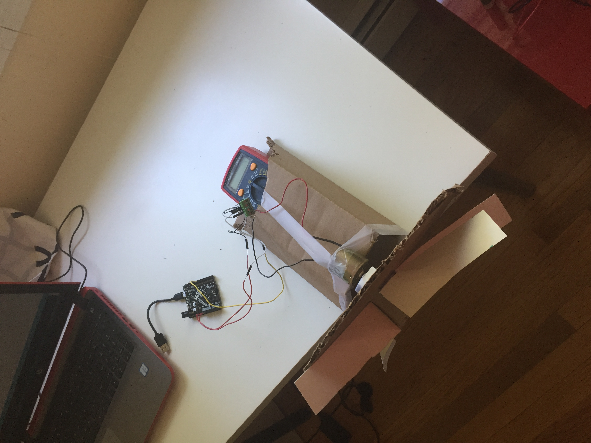

The first thing I learned about breadboards, is that that electrons in the railings travel along the length of the board, while electrons once in the middle portions, travel along the width of the board.
It can be observed, that regardless of the resistors (number of and type) and LED lights, the voltage drop at the end of each circuit is the same, and is equal to the initial voltage input.
However, within each circuit, the voltage drop for each LED light can differ based on the total number of LED lights and resistors (and types) in that circuit.
The voltage and current for two LED lights in Parallel are unaffected by each other.
However, the voltage and current for two LED lights in a Series are affected by each other
Through experimenting with a Potentiometer, I learned that it can be used as a connection for electricity/electrons. I also learned that by adjusting the slider on the Potentiometer, the resistance that the Potentiometer provides, can be adjusted.
This is the final Virtual Version of the Circuit). As seen here, I also included a capacitator, which can store energy.
As it can be noticed, the Voltage drop across the measured resistor if 185 mV (milli-Volts) or .185 Volts. The Resistance in the resistor is 5 Ohms. Using Ohm’s Law (Current = Voltage/Resistance / I = V/R), it can be determined that the Current Flow across this resistor is 0.037 Amps
Using Motors and Arduino
During this part of Week 2, I built a kinetic structure that could possibly be a prototype of my final project. I used a Metro Board, L9 Board a canon motor, wires and some other home materials.
I first connected wires from the Metro Board to the corresponding spikes on the L9 Board. Then, connected the wires that ran from the Canon motors into two tunnels on the L9 Board. Then, using carboard cutouts, an eraser, poster paper and paper towel rolls, I made the structure of a fan by attaching those components together using tape. The fan was then attached to the motor end of the Canon motor that was taped down on the cardboard box. A multimeter was placed on the back side of the carboard box to hold it down.

The first run/test of the device didn't involve any computer software to command the spinning of the motor. The yellow wire was simply connected to a 2nd GND source. The power came from the laptop however.
The 2nd run/test used an Arduino code that instructed the motor to start at 255 volts to 0 volts over a period of 30 milliseconds, decreasing in 5 volt increments. Once the motor has reached a running power at 0 volts, the code commands it to run that for 30 seconds (or 3000 milliseconds)
.png)
.png)
.png)
.png)
.png)
.png)
.png)
.png)
.png)
.png)
.png)